Référence à gauche, interface native à droite. 320 et 390 px. Données de contrôle uniquement, aucun compte réel. Les deux URL de héros inaccessibles utilisent une illustration Salon d’origine connue, également dans les références rendues. Les cinq sources partielles signalent leurs fonctions non prises en charge.
Index · Contrats et écarts · Contrôles
dobby_membres_de_la_maisonn_e · verified-functional
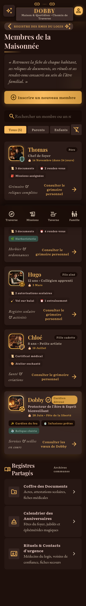
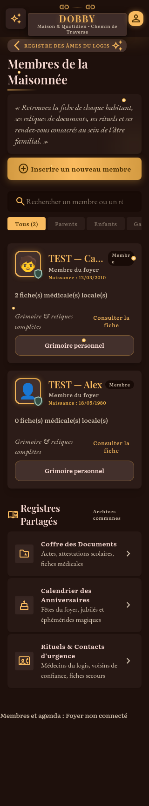
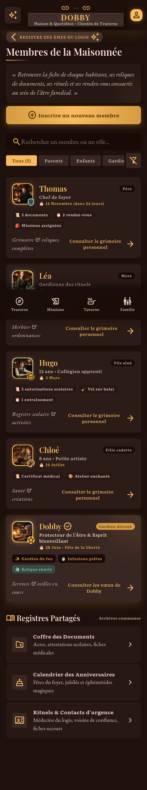
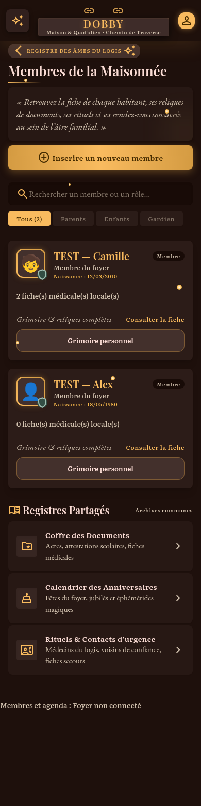
dobby_ajouter_ou_modifier_un_membre · verified-partial
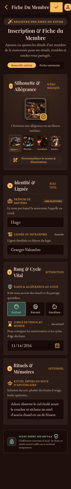
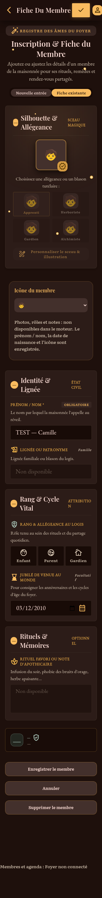
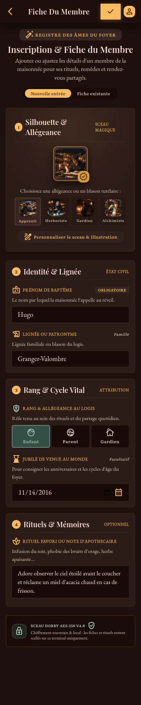
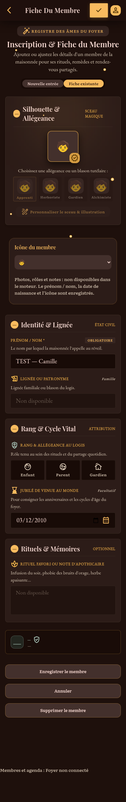
dobby_agenda_almanach_du_foyer · verified-functional
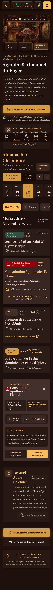
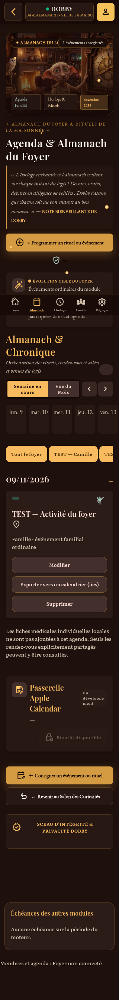
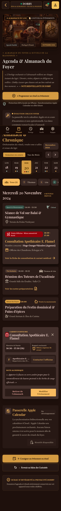
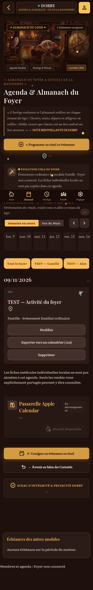
dobby_cr_er_ou_modifier_un_rendez_vous_m_dical · verified-partial
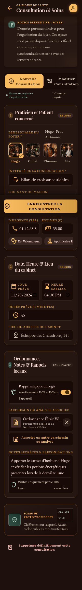
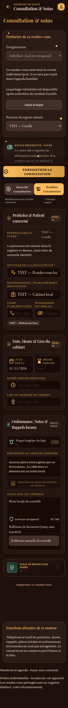
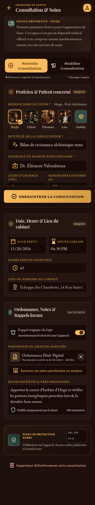
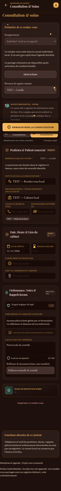
dobby_carnet_de_sant_familial · verified-partial
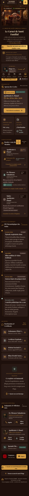
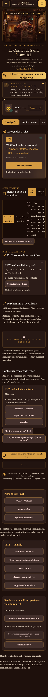
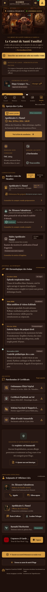
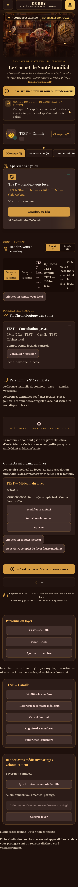
dobby_carnet_de_sant_individuel · verified-partial
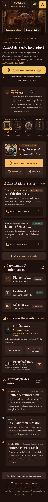
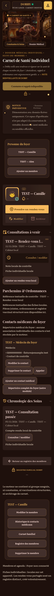
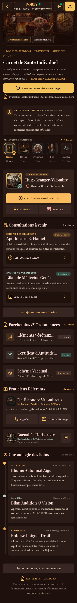
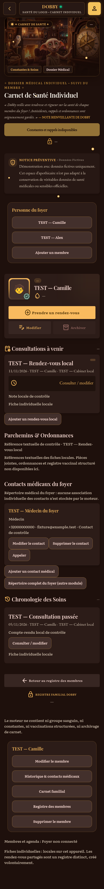
dobby_historique_contacts_m_dicaux · verified-partial
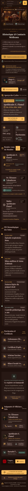
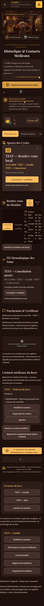
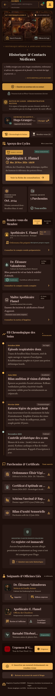
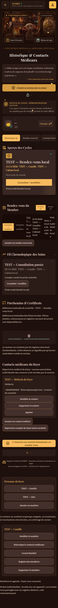